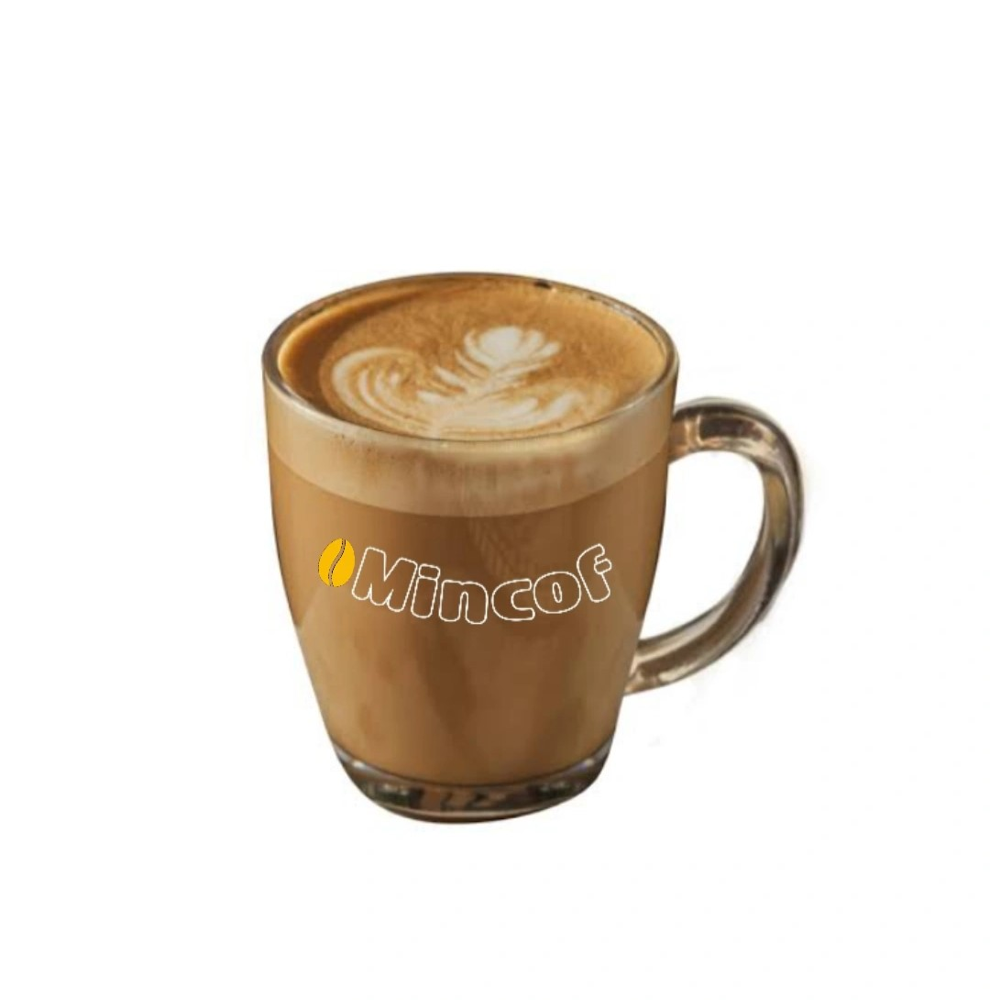
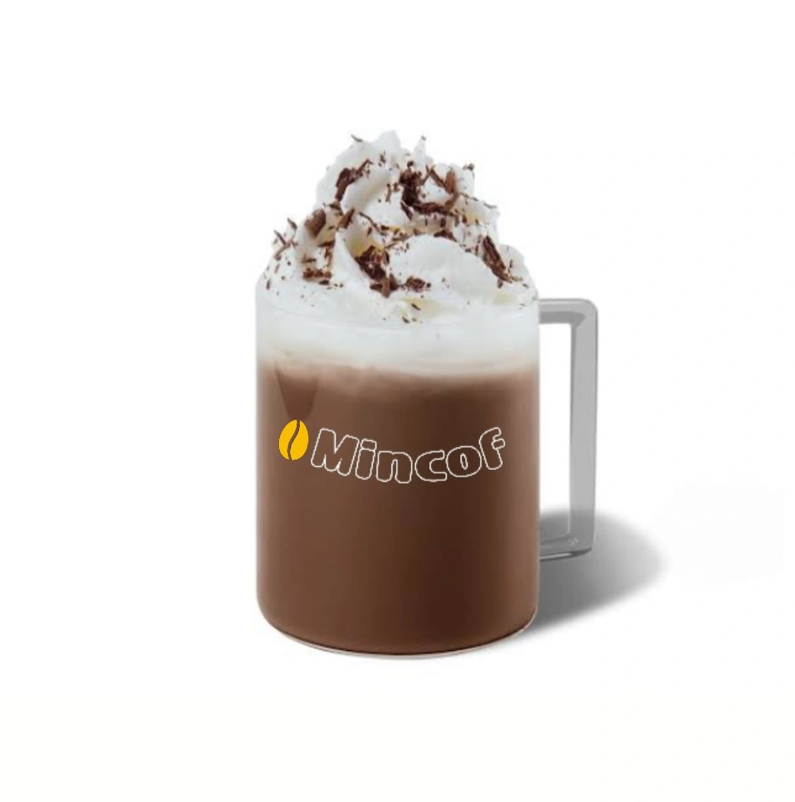
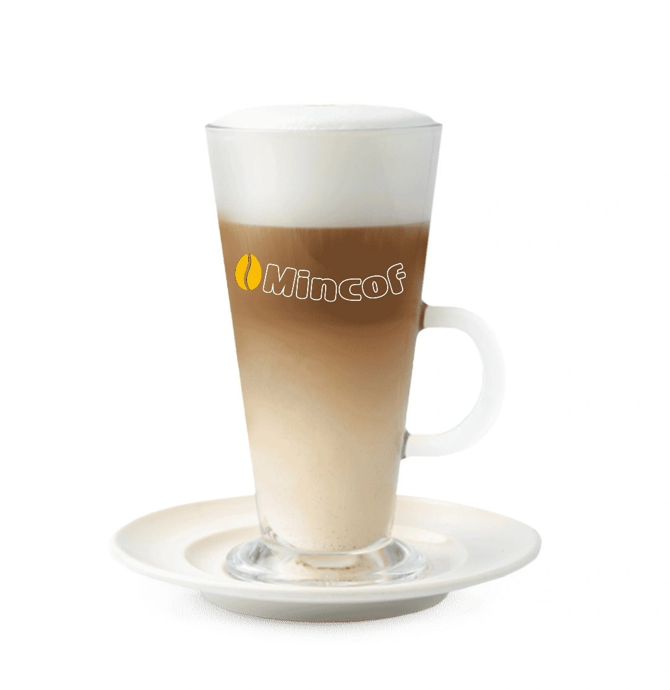
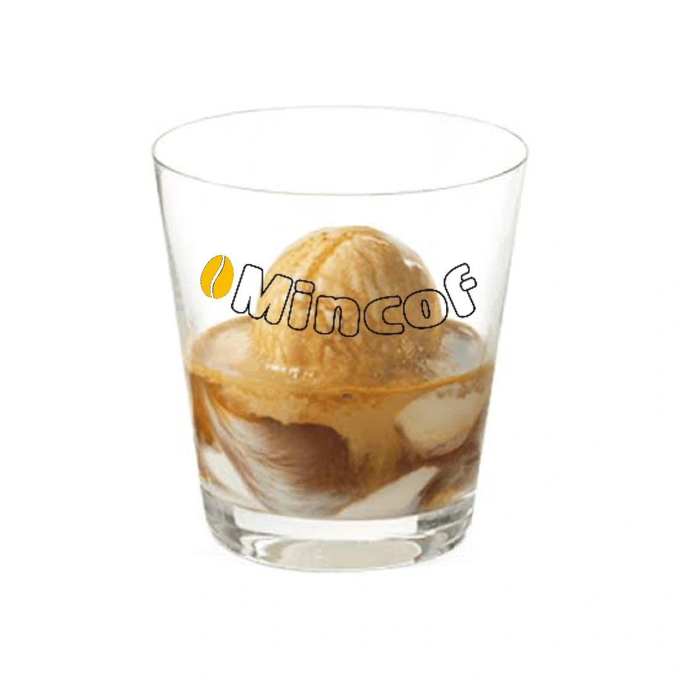

COFFEE MENU
Available now!
AMERICANO
A coffee drink typically made from equal parts espresso and
hot water and is enjoyed black or with a small amount of cream.
Americanos typically have strong flavor with less bitterness.
ESPRESSO
A strong brew of coffee produced by forcing boiled water under pressure
through finely ground coffee. The finely ground coffee beans means an
increased amount of surface contact with the water.
Cappuccino
A beloved espresso-based hot coffee drink made with layering of espresso,
steamed milk, and milk foam on top. The taste of cappuccinos can be described
as creamy, smooth, and balanced.
LATTE

As the most popular coffee drink out there, the latte is
comprised of a shot of espresso and steamed milk with just a touch of foam.
It can be ordered plain or with a flavor shot of anything from vanilla to pumpkin spice.
MOCHA

For all you chocolate lovers out there, you'll fall
in love with a mocha (or maybe you already have).
The mocha is a chocolate espresso drink with steamed milk and foam.
MACCHIATO

The macchiato is another espresso-based drink that has a small
amount of foam on top. Its the happy medium between a cappuccino and a doppio.
LUNGO

A dark, black coffee that originated from Italy. Lungo in Italian translates as 'long',
meaning lungo coffee involves 'pulling' the espresso shot longer.
AFFOGATO

A delightful Italian dessert combin ng two simple yet indulgent components: ice cream vanilla
and hot espresso
CORTADO
The macchiato is another espresso-based drink that has a small
amount of foam on top. Its the happy medium between a cappuccino and a doppio.
IRISH COFFEE
A n espresso-based drink featuring a double shot of espresso and a thin layer of microfoam,
a velvety-textured steamed milk
FLAT WHITE

An espresso-based drink featuring a double shot of espresso and a thin layer of microfoam,
a velvety-textured steamed milk
RED EYE
A shot in the dark," consists of a regular brewed coffee with a
shot of espresso added to it.